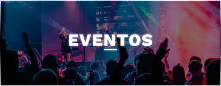

O "Fórum de Inovação Tecnológica 2024" reunirá especialistas, empreendedores e entusiastas da tecnologia para discutir as últimas tendências em inovação digital. O evento contará com palestras, workshops e painéis sobre inteligência artificial, blockchain, e sustentabilidade tecnológica, oferecendo uma plataforma única para networking e aprendizado.
A "Expo Sustentabilidade 2024" é um evento focado em soluções verdes e práticas sustentáveis para empresas e consumidores. Com expositores de todo o país, o evento apresentará inovações em energia renovável, reciclagem, e produção responsável, além de palestras inspiradoras sobre como construir um futuro mais sustentável.
O "Festival de Cultura Brasileira" celebra a diversidade cultural do Brasil com apresentações de música, dança, e artes visuais de todas as regiões do país. Além dos shows ao vivo, o evento contará com feiras gastronômicas, exposições de arte, e workshops que destacam as tradições e a criatividade brasileira.